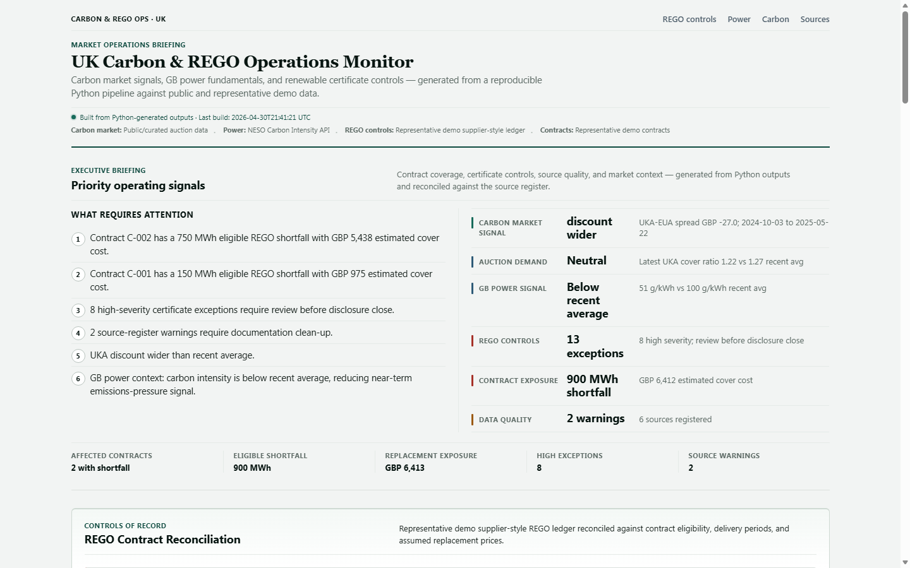

Project brief
UK Carbon & REGO Operations Monitor
A public analyst workflow linking carbon market signals, GB power emissions context, and renewable certificate reconciliation controls.
What It Does
Built a public dashboard and analyst workflow that connects UK/EU carbon auction signals, GB power-system emissions data, and REGO-style certificate reconciliation controls. The project shows how fragmented market, power, certificate, contract, and source data can be turned into a decision-useful operating view for carbon and renewables analysis.

Why It Matters
- Carbon analysis is not just allowance prices; it also depends on power fundamentals, policy context, and certificate evidence.
- Renewable supply claims require clean ownership, eligibility, delivery-period, retirement, and source documentation.
- Certificate inventory errors can create reporting, contractual, and replacement-exposure risk.
What I Built
- Python pipeline for data cleaning, signal generation, and reconciliation checks.
- Static dashboard rendering processed JSON outputs.
- REGO exception register covering certificate eligibility, contract coverage, source quality, and severity.
- Analyst note summarising carbon, power, certificate, and data-quality signals.
Links
Live dashboard
tannerl22.github.io/uk-carbon-rego-monitor